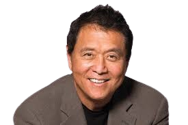

Robert T. Kiyosaki es una figura prominente en el mundo de las finanzas personales, los negocios y la educación financiera.
Es mejor conocido por su libro "Padre Rico, Padre Pobre", que se convirtió en un fenómeno mundial y cambió la forma en que
muchas
personas piensan sobre el dinero, las inversiones y la libertad financiera.

Libros que debes leer: Robert
ha escrito más de veinte libros que han vendido decenas de millones de ejemplares en todo el mundo,
entre los cuales destacan
La ventaja del ganador, Más importante que el dinero, Guía para invertir, La escuela de negocios,
La conspiración de los ricos,
Retírate joven y rico, Falso, El juego del dinero, Despierta el genio financiero de tus hijos,
El toque de Midas, El cuadrante
del flujo de dinero, Por qué los ricos se vuelven más ricos, Antes de renunciar a tu empleo,
Incrementa tu coeficiente intelectual financiero, Niño rico, niño listo.